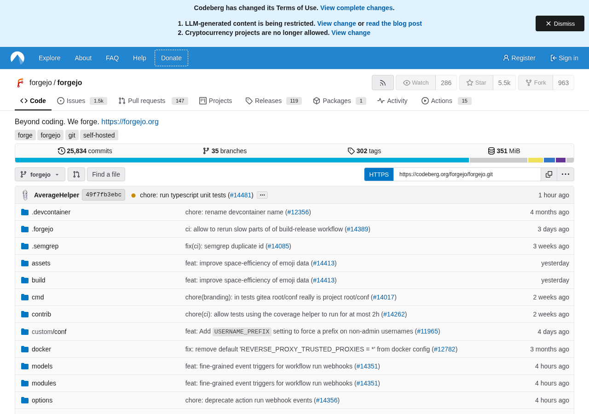
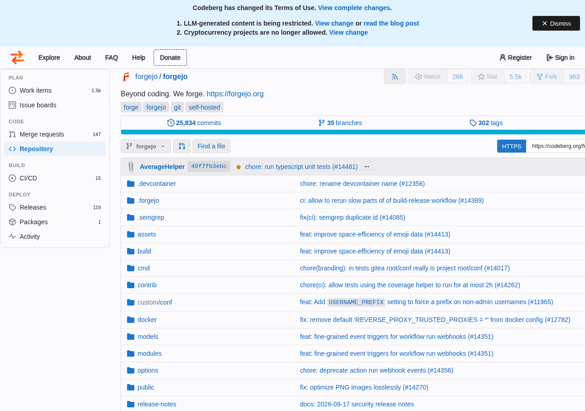
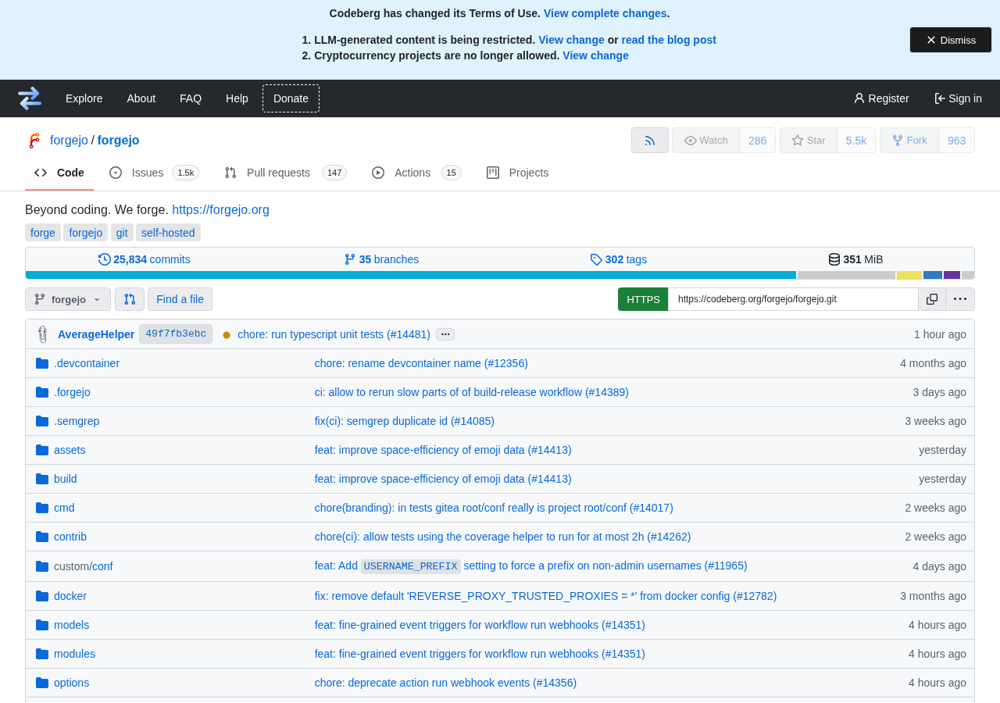
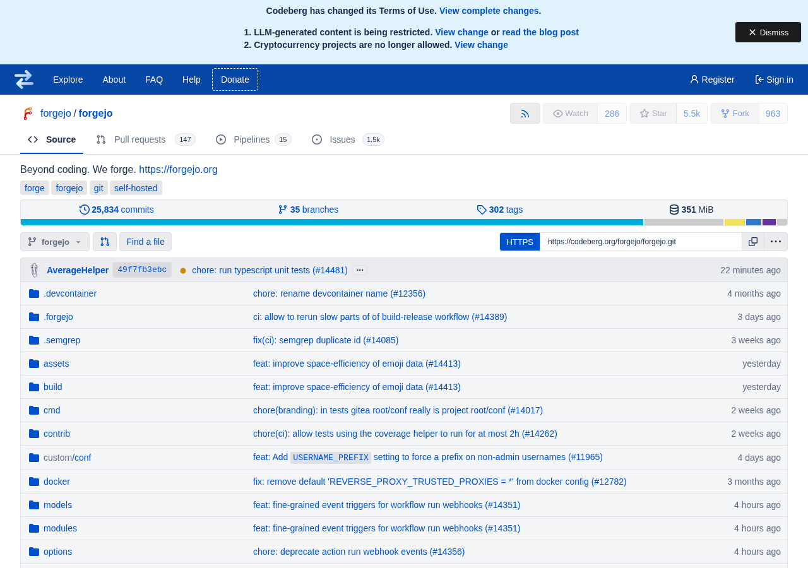

Any forge · any skin
Use any forge, keep your muscle memory.
gitalike paints the UI of GitHub, GitLab or Bitbucket onto the forge you are on — colour, words, navigation, reference markers and keyboard shortcuts. Any site you set up can wear any skin; it changes nothing about what the site does, and reverts the moment you switch it off.
No network requests No data collected GPL-3.0 Chromium & Firefox

 GitHub default
GitLab skin
↔
GitHub default
GitLab skin
↔
See it
Live captures of the real sites at 1280×900. Drag the handle, or use the arrow keys, to swipe between the plain site and the skinned one.
GitLab project page
Left: GitLab as it ships — a vertical sidebar. Right: the same page skinned as GitHub — GitHub's flat tab row, rebuilt from GitLab's scattered sidebar and hosted under the repository header.

 GitLab default · sidebar
GitHub skin · tab row
↔
GitLab default · sidebar
GitHub skin · tab row
↔
GitHub project page
Left: GitHub as it ships — a horizontal tab bar. Right: the same page skinned as GitLab — a vertical sidebar-style column.
GitHub default · tab bar
GitLab skin · sidebar column
↔
Codeberg (Gitea) → GitLab
Left: Codeberg as it ships — a flat tab row. Right: the same page skinned as GitLab — Plan / Code / Build / Deploy group headings in a left sidebar.


Gitea default · tab row GitLab skin · sidebar ↔Codeberg (Gitea) → GitHub
Left: Codeberg as it ships. Right: the same page skinned as GitHub — a dark bar and GitHub's flat tab row with the warm active underline.

Gitea default · tab row GitHub skin · tab row ↔Codeberg (Gitea) → Bitbucket
Left: Codeberg as it ships. Right: the same page skinned as Bitbucket — a left sidebar and Atlassian's palette, with Bitbucket's words: Source, Commits, Branches, Pull requests, Pipelines, Deployments, Jira issues, Security, Downloads.

Gitea default · tab row Bitbucket skin · sidebar ↔GitLab profile page
Left: GitLab as it ships — a vertical super-sidebar starting at the person's name. Right: the same page skinned as GitHub — a flat row of tabs rebuilt as GitHub's (Overview, Repositories, Projects, Packages, Stars), with the identity in a left card under a large avatar.

 GitLab default · sidebar
GitHub skin · top strip
↔
GitLab default · sidebar
GitHub skin · top strip
↔
GitHub profile page
Left: GitHub as it ships — a horizontal profile tab row. Right: the same page skinned as GitLab — a full-height super-sidebar headed "Profile" and rebuilt as GitLab's menu, with the profile header moved into the content and an About/Info/Contact rail on the right.

 GitHub default · tab row
GitLab skin · left rail
↔
GitHub default · tab row
GitLab skin · left rail
↔
Not just a theme
A theme changes the colours. gitalike also matches the other product's words and habits, then undoes every change when you switch it off.
Colour
Each site's own design tokens (GitHub's Primer, GitLab's Pajamas) are re-pointed at the other product's palette — light and dark.
Words
"Pull request" ⇄ "Merge request", "Insights" ⇄ "Analytics", "Actions" ⇄ "CI/CD". Ordinary page copy only — never inside code, inputs or editable regions.
Navigation
Repo tabs are relabelled, reordered and re-oriented — GitHub's bar becomes GitLab's grouped sidebar, and GitLab's sidebar becomes GitHub's flat tab row.
References
A pull/merge-request link shows the other product's marker:
#42 ⇄ !42.
Shortcuts
The other product's g-combos work, so the muscle
memory you built on one forge carries over to the other.
Reversible
Every change is recorded and reverted exactly when the skin is switched off. With it off, the extension is completely inert.
Works with your forges
Three skins — GitLab, GitHub and Bitbucket — and any site you have set up can wear any of them.
Add any instance by visiting it or typing its address — no rebuild, no permission prompt. Bitbucket is a skin, not a source, so it is a target rather than a site you point the extension at. Sourcehut is the next candidate.
Nothing leaves your browser
gitalike collects no data and makes no network requests. Both stylesheets are bundled and the mark is an inline data URI.
It stores only your on/off choices and the instances you add, in the browser's own synced extension storage. Nothing read from a page is stored or sent anywhere.
Why it asks for all-sites access
GitHub Enterprise Server and self-hosted GitLab live on hostnames nobody can predict, and a manifest match pattern cannot wildcard a host's middle. So gitalike matches all pages but decides at runtime: its scripts are registered only for the hosts you have set up, and on any other host it does nothing at all.
Install
Two clicks, or build it yourself.
Chromium
Chrome, Edge and Brave share the API.
- Download the ZIP and unzip it.
- Go to chrome://extensions and turn on Developer mode.
- Load unpacked → choose the unzipped folder.
Load unpacked takes the folder, not the ZIP. A Chrome Web Store listing is in the works.
Firefox
The ZIP is unsigned, so Firefox loads it temporarily — it is gone when the browser restarts. A permanent install comes from addons.mozilla.org.
- Download the ZIP.
- Go to about:debugging#/runtime/this-firefox.
- Load Temporary Add-on… → choose the ZIP itself; it does not need unzipping.
From source
No runtime or build dependencies — the build only generates the two per-browser manifests.
npm run build # -> dist/chromium and dist/firefox npm test # unit tests, no browser needed node tools/e2e.mjs # Playwright end-to-end test against the live sites